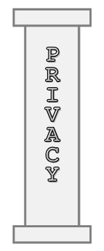
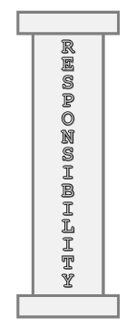
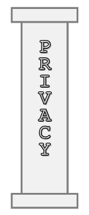
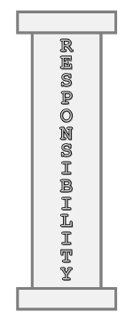
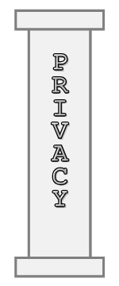
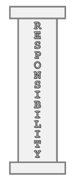
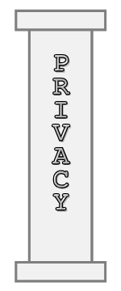
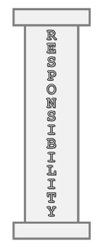

 



Ethical AI refers to the principles and expectations that guide how artificial intelligence should be designed and used so that it aligns with widely accepted ideas of right and wrong. While morals, ethics, and laws all relate to human behavior, ethics in AI specifically focuses on external standards, such as professional codes, societal norms, and institutional values, that shape responsible development. Because AI reflects the judgments of the people who build it, issues like privacy, surveillance, bias, and discrimination can easily appear in its outputs if ethical safeguards are weak or ignored. Ethical AI therefore seeks to ensure that these systems are created in ways that uphold human dignity, minimize harm, and support fairness and accountability.
AI systems are becoming deeply embedded in everyday life, increasingly influencing decisions, opportunities, and access to services. With this growing power comes an equally significant responsibility: poorly designed or misused AI can cause real harm, spread misinformation, reinforce discrimination, or operate without meaningful oversight. Ethical AI practices help prevent these outcomes by promoting transparency, human oversight, and public accountability. They support the safe and sustainable development of AI, build trust between users and technology, and help ensure that AI enhances society rather than undermining it, even as the technology continues to evolve rapidly.
Artificial intelligence should always place people first. This means designing systems that respect human dignity, protect individual freedoms, and treat everyone fairly. A human-centered approach helps ensure AI supports society rather than reinforcing existing problems.
• Protecting dignity, autonomy, and equality
AI should respect each person’s worth and independence. It must not limit people’s freedom to make choices or treat anyone as less important because of who they are.
• Preventing discrimination and harmful bias
Since AI learns from human-created data, it can unintentionally repeat unfair patterns. Developers must monitor, test, and adjust systems so that they avoid biased or unequal outcomes.
• Ensuring AI supports well-being
Technology should help people, not replace them or put them at risk. Ethical design considers safety, accuracy, and whether the system benefits the individuals who interact with it.
• Encouraging accessible and inclusive design
AI should be usable and beneficial to a wide range of people, including those with different abilities, backgrounds, and needs. This means designing tools that are understandable, available, and sensitive to diverse communities.
Transparency is essential for building trust in AI systems. When people understand how an AI works, what data it uses, how decisions are reached, and where human oversight fits in, they are better able to judge whether the system is fair, safe, and appropriate.
• Helping users understand how AI reaches its decisions
The public increasingly expects to know why an AI gives a certain output. Providing explanations, even simple ones, helps users make informed choices and reduces uncertainty about hidden or automated processes.
• Making AI systems open, traceable, and well-documented
Regulations such as GDPR and CCPA require organizations to clearly document how data is collected and used, and to maintain records of how AI systems operate. This traceability allows errors to be caught early and helps ensure systems behave as intended.
• Clearly communicating when AI is involved
Users should always be told when an AI is part of a decision-making process, whether reviewing data, scoring information, or recommending outcomes. Open communication strengthens trust and helps prevent confusion or unintentional reliance on automated results.
• Supporting accountability and reducing misinformation
Transparent systems make it easier to identify incorrect, biased, or misleading outputs. They also clarify who is responsible for the system’s behavior, making oversight more effective and reducing the chance of unnoticed harm.
Transparency ensures AI does not operate as an unseen “black box.” By being open about data practices, decision processes, and system limitations, organizations help create AI that is safer, more trustworthy, and more aligned with public expectations.
Privacy and security are essential to ethical AI because these systems often rely on large amounts of personal data. AI can gather information quickly, combine it from many places, and reveal details people never intended to share. When data is handled carelessly or without proper safeguards, individuals can be exposed to surveillance, misuse, and loss of control over their own information.
• Collecting and using personal data responsibly
AI should only use data in ways that respect an individual’s expectations and rights. Because AI can analyze enormous datasets in ways humans cannot, it becomes even more important to limit how much information is gathered and ensure it is used for clearly defined, ethical purposes.
• Ensuring privacy safeguards and meaningful consent
People deserve to know when their information is being collected, how it will be used, and who will have access to it. Many harms arise when data is gathered silently or shared without permission, especially in systems that track personal behavior.
• Protecting data through secure storage and handling
Strong security practices are necessary to prevent leaks, unauthorized access, or large-scale breaches. This includes properly storing data, restricting who can view it, and deleting it when it is no longer needed, steps that become more critical as AI systems process sensitive personal information.
• Reducing risks of surveillance and misuse
AI’s ability to combine data from phones, sensors, online activity, and public systems can create powerful tools, but also increases the possibility of invasive monitoring. Ethical use requires careful limits to prevent technologies from being used to track or profile people unfairly.
Ethical AI requires clearly defined responsibility. AI systems do not carry moral or ethical burden, humans do. Because developers, organizations, and decision-makers shape how AI behaves, they must be accountable for the outcomes it produces.
• Assigning responsibility for AI decisions and outcomes
AI cannot justify or explain its own actions; the obligation falls on the humans who design, deploy, or oversee the system. Clear roles and responsibilities help ensure that someone is answerable when decisions impact individuals or communities.
• Ongoing monitoring, auditing, and impact assessments
Ethical challenges arise when systems operate without oversight. Regular auditing, testing, and documentation help catch harmful patterns early, confirm that the system behaves as intended, and prevent unnoticed drift or misuse.
• Preventing unsafe, misleading, or harmful outputs
AI can amplify mistakes at scale if left unchecked. Responsible use means putting safeguards in place to reduce misinformation, limit harmful consequences, and ensure that results remain accurate and safe for real-world use.
• Considering environmental and societal impact
Evaluating how AI affects social structures, vulnerable populations, and even resource consumption, ensuring that technological progress does not create new forms of harm.
Ethical AI becomes meaningful only when its principles are applied in real situations. Responsible AI is not just about theory; it requires ongoing processes, human oversight, and careful evaluation at every stage of a system’s life cycle. This focuses on turning ethical guidelines into clear actions that help prevent harm, improve reliability, and ensure AI remains aligned with human values over time.